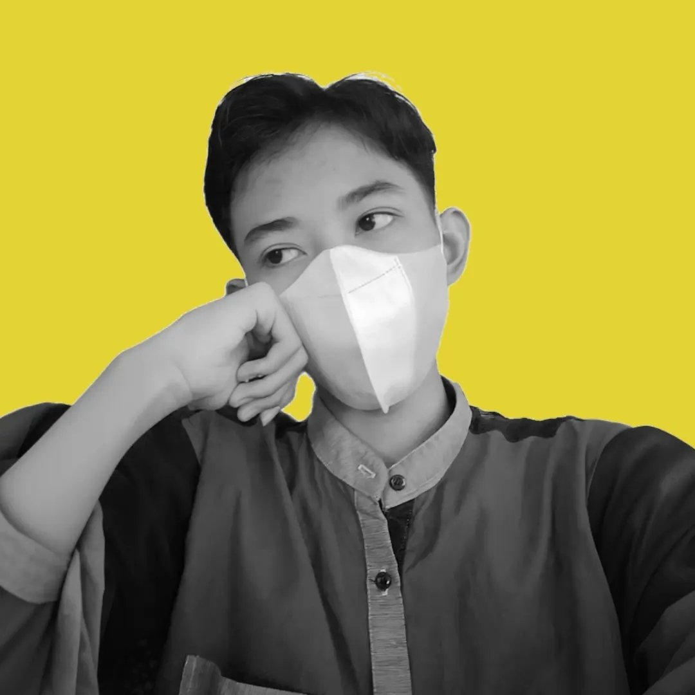

Poster Designer | Creative Visionary
This is my homepage, a designer who creates visual art with precision and creativity. Feel free to explore my work and contact us!
Create a strong visual identity for your brand, so it's easy to remember and makes a lasting impression.
Change or update the existing logo to make it more relevant and in line with current developments.
Create attractive and informative posters for various purposes, from events to product promotions.